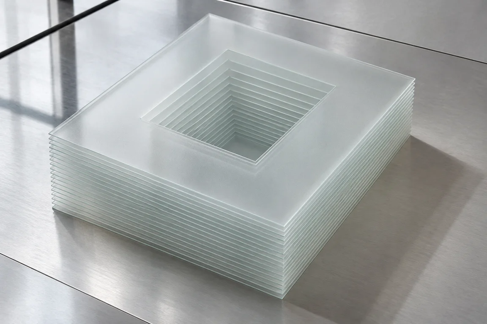

Surface Study
An evolving portfolio and a study in how an interface feels.
About the work
I’m xbl1e, a software developer. I build backend systems and care about how they feel at the surface. I like software that’s fast, quiet and does exactly what it needs to. That was my aim when I rewrote a sync engine and worked through its bottlenecks.
The exhibition
Activity